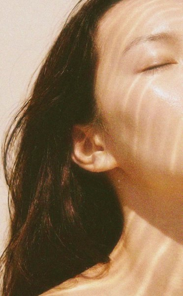
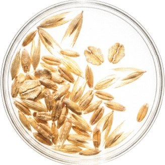
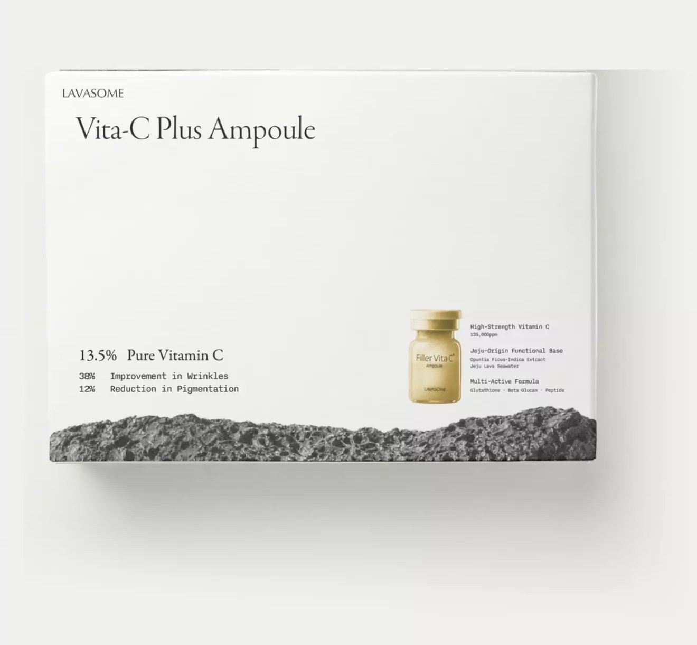
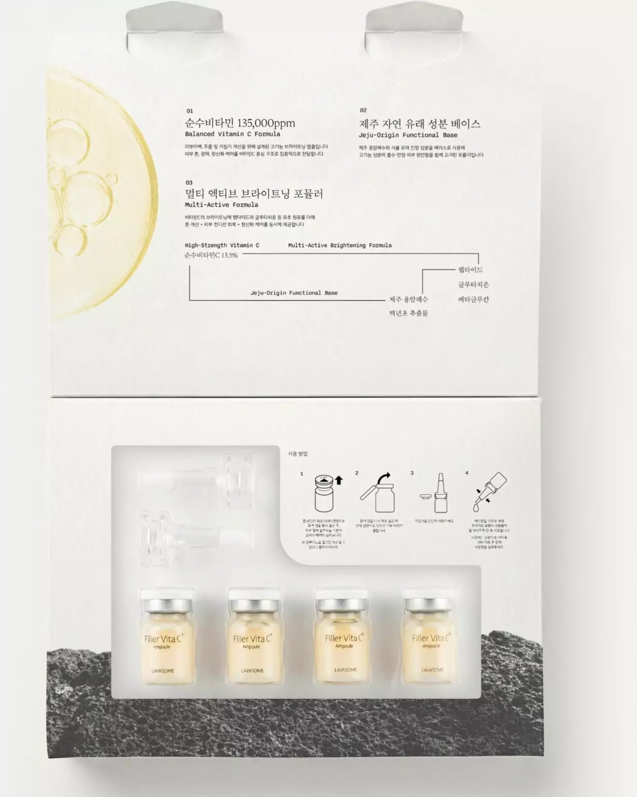

<title>Filler Vita-C⁺ Ampoule</title>
<meta name="robots" content="noindex">
<link rel="preconnect" href="https://fonts.googleapis.com">
<link rel="preconnect" href="https://fonts.gstatic.com" crossorigin>
<link rel="stylesheet" href="https://fonts.googleapis.com/css2?family=Hahmlet:wght@200;300;400&family=IBM+Plex+Mono:wght@400&family=IBM+Plex+Sans+KR:wght@400;500&display=swap">
<link rel="stylesheet" href="fonts/fonts.css">
<style>
/* 시험 성적서와 바이알 라벨의 세계 — 현무암 회색 지면, 왼쪽 정렬의 비대칭 격자,
   사진이 먼저 말하고 글은 좁은 단으로 비켜 선다. 색은 제형 사진과 산화 데이터에서만 쓴다. */
:root {
  --ground: #E9EAE6;      /* 석회 회색 — 크림이 아니라 광물 쪽 */
  --paper: #F4F4F1;
  --ink: #1D1E1C;         /* 현무암 */
  --mute: #5F615C;        /* 보조 글자, ground 위 5.6:1 */
  --rule: #C3C5BF;
  --basalt: #262725;
  --basalt-ink: #E4E4DF;
  --basalt-mute: #A5A7A1;
  --serum: #E5BD7F;       /* 실제 제형색 — 제품 사진에서 뽑음 */
  --ox-1: #D9A255; --ox-2: #C47A2C; --ox-3: #8E4A1B; --ox-4: #5A2A12;
  --display: "Hahmlet", "Noto Serif KR", serif;
  --text: "IBM Plex Sans KR", "Noto Sans KR", system-ui, sans-serif;
  --mono: "IBM Plex Mono", ui-monospace, monospace;
  --T: 6s;                /* 모든 움직임의 주기 — GIF 한 바퀴 */
  --g: clamp(16px, 4.6vw, 40px);
}
* { box-sizing: border-box; }
body { margin: 0; background: #D9DAD5; color: var(--ink); font: 400 16px/1.8 var(--text); letter-spacing: -.005em; word-break: keep-all; -webkit-font-smoothing: antialiased; }
img { display: block; max-width: 100%; }
h1, h2, h3, p, ol, ul, dl, dd, figure, table { margin: 0; padding: 0; }
ol, ul { list-style: none; }

.page { max-width: 860px; margin: 0 auto; background: var(--ground); overflow: hidden; }
.sec { padding: clamp(64px, 12vw, 112px) var(--g); position: relative; }
.grid { display: grid; grid-template-columns: repeat(12, minmax(0, 1fr)); column-gap: 20px; }

.tag { font: 400 11.5px/1.5 var(--mono); letter-spacing: .08em; text-transform: uppercase; color: var(--mute); }
.h2 { font: 300 clamp(26px, 4.4vw, 36px)/1.38 var(--display); letter-spacing: -.03em; text-wrap: balance; }
.body { font-size: 15.5px; line-height: 1.85; color: #3B3D39; max-width: 30em; }
.foot { font-size: 12.5px; line-height: 1.7; color: var(--mute); }
[data-ph] { background: rgba(229, 189, 127, .38); padding: 0 3px; }

/* ── 01 첫 화면: 큰 바이알 + 작은 피부 컷 ───────────────────── */
.hero { padding-top: clamp(28px, 6vw, 44px); }
.hero__bar { display: flex; justify-content: space-between; gap: 12px; padding-bottom: 14px; border-bottom: 1px solid var(--rule); }
.hero__grid { margin-top: clamp(36px, 7vw, 64px); align-items: start; }
.hero__copy { grid-column: 1 / 6; padding-top: 8px; }
.hero h1 { font: 300 clamp(30px, 5vw, 40px)/1.32 var(--display); letter-spacing: -.035em; white-space: nowrap; }
.hero__lede { margin-top: 26px; font-size: 15.5px; line-height: 1.85; color: #3B3D39; max-width: 19em; }
.hero__vial { grid-column: 6 / 13; position: relative; aspect-ratio: 4 / 5.2; overflow: hidden; background: #EEDCCB; }
.hero__vial img { width: 100%; height: 100%; object-fit: cover; object-position: 50% 78%; }
.sheen { position: absolute; left: 34%; top: 40%; width: 32%; height: 48%; overflow: hidden; mix-blend-mode: soft-light; pointer-events: none; }
.sheen::after { content: ""; position: absolute; top: -10%; bottom: -10%; width: 34%; left: -50%; transform: skewX(-14deg);
  background: linear-gradient(90deg, transparent, rgba(255, 255, 255, .9), transparent);
  animation: sheen var(--T) cubic-bezier(.4, 0, .2, 1) infinite; animation-delay: calc(var(--T) * -.75); }
@keyframes sheen { 0%, 20% { left: -50% } 55%, 100% { left: 125% } }
.hero__skin { grid-column: 4 / 7; margin-top: clamp(-240px, -27vw, -60px); position: relative; z-index: 1; aspect-ratio: 372 / 520; overflow: hidden; }
.hero__skin img { width: 100%; height: 100%; object-fit: cover; object-position: 50% 30%; }
.hero__skin + .tag { grid-column: 4 / 8; margin-top: 10px; }
.hero__spec { grid-column: 1 / 13; margin-top: 34px; padding-top: 14px; border-top: 1px solid var(--rule); display: flex; flex-wrap: wrap; gap: 4px 18px; }

/* ── 02 13.5 ───────────────────────────────────────────────── */
.dose { align-items: end; }
.dose__n { grid-column: 1 / 9; font: 200 clamp(110px, 25vw, 214px)/.82 var(--display); letter-spacing: -.06em; font-variant-numeric: lining-nums;
  animation: wipe var(--T) cubic-bezier(.6, 0, .2, 1) infinite; animation-delay: calc(var(--T) * -.6); }
.dose__n small { font-size: .3em; letter-spacing: 0; margin-left: .08em; }
@keyframes wipe { 0% { clip-path: inset(0 100% 0 0) } 28%, 92% { clip-path: inset(0 0 0 0) } 100% { clip-path: inset(0 0 0 100%) } }
.dose__txt { grid-column: 9 / 13; padding-bottom: 10px; }
.dose__txt .body { margin-top: 12px; font-size: 14.5px; }

/* ── 03 무수 처방 + 산화 색 기록 ────────────────────────────── */
.anhy__head { grid-column: 1 / 8; }
.anhy__head .body { margin-top: 20px; }
.anhy__ph { grid-column: 9 / 13; align-self: end; }
.ruler { position: relative; height: 34px; margin-top: 10px; border-bottom: 1px solid var(--ink);
  background: repeating-linear-gradient(90deg, var(--ink) 0 1px, transparent 1px calc(100% / 13)) bottom / 100% 8px no-repeat; }
.ruler__needle { position: absolute; bottom: 0; width: 1px; height: 30px; background: var(--ink); left: calc(2.5 / 13 * 100%);
  animation: needle var(--T) cubic-bezier(.3, .8, .2, 1) infinite; animation-delay: calc(var(--T) * -.6); }
.ruler__needle::after { content: "3.5"; position: absolute; left: 6px; top: -4px; font: 400 11.5px var(--mono); }
@keyframes needle { 0% { left: calc(6 / 13 * 100%) } 30%, 100% { left: calc(2.5 / 13 * 100%) } }
.ruler__scale { display: flex; justify-content: space-between; margin-top: 6px; font: 400 11px var(--mono); color: var(--mute); }
.anhy__ph .foot { margin-top: 10px; }

.ox { grid-column: 1 / 13; margin-top: clamp(48px, 8vw, 72px); }
.ox__cap { display: flex; justify-content: space-between; gap: 12px; padding-bottom: 12px; border-bottom: 1px solid var(--ink); }
.ox__table { position: relative; display: grid; grid-template-columns: 9.5em repeat(5, minmax(0, 1fr)); gap: 10px 8px; margin-top: 18px; align-items: center; }
.ox__table .tag { color: var(--ink); }
.ox__w { text-align: left; }
.ox__row { font-size: 14px; line-height: 1.4; }
.ox__row small { display: block; white-space: nowrap; overflow: hidden; text-overflow: ellipsis; font: 400 11px var(--mono); color: var(--mute); letter-spacing: .04em; }
.chip { height: clamp(46px, 9vw, 72px); background: var(--serum); }
/* 기록 커서 — 지나간 주차부터 일반 제형 칸이 산화된 색으로 바뀐다 */
.ox__cursor { position: absolute; top: -6px; bottom: -6px; width: 1px; background: var(--ink); left: calc(9.5em + 8px);
  animation: cursor var(--T) linear infinite; animation-delay: calc(var(--T) * -.7); }
@keyframes cursor { 0%, 6% { left: calc(9.5em + 8px); opacity: 0 } 10% { opacity: 1 } 70% { left: 100%; opacity: 1 } 78%, 100% { left: 100%; opacity: 0 } }
.c-1 { animation: c1 var(--T) linear infinite; } .c-2 { animation: c2 var(--T) linear infinite; }
.c-3 { animation: c3 var(--T) linear infinite; } .c-4 { animation: c4 var(--T) linear infinite; }
.c-1, .c-2, .c-3, .c-4 { animation-delay: calc(var(--T) * -.7); }
@keyframes c1 { 0%, 22% { background: var(--serum) } 26%, 94% { background: var(--ox-1) } 100% { background: var(--serum) } }
@keyframes c2 { 0%, 34% { background: var(--serum) } 38%, 94% { background: var(--ox-2) } 100% { background: var(--serum) } }
@keyframes c3 { 0%, 46% { background: var(--serum) } 50%, 94% { background: var(--ox-3) } 100% { background: var(--serum) } }
@keyframes c4 { 0%, 58% { background: var(--serum) } 62%, 94% { background: var(--ox-4) } 100% { background: var(--serum) } }
.ox .foot { margin-top: 18px; }
.ox__title { font-size: 14px; font-weight: 500; }
.ox__w { font-family: var(--text) !important; letter-spacing: 0 !important; font-size: 12.5px !important; }

/* ── 04 제주 (어두운 면) ──────────────────────────────────── */
.jeju { background: var(--basalt); color: var(--basalt-ink); }
.jeju .tag { color: var(--basalt-mute); }
.jeju__rock { grid-column: 1 / 7; grid-row: 1 / 3; aspect-ratio: 784 / 1200; overflow: hidden; }
.jeju__rock img { width: 100%; height: 100%; object-fit: cover; }
.jeju__head { grid-column: 8 / 13; align-self: start; }
.jeju__head .h2 { margin-top: 14px; }
.jeju__list { grid-column: 8 / 13; align-self: end; display: grid; gap: 34px; margin-top: 40px; }
.jeju__list figure { display: grid; grid-template-columns: 76px 1fr; gap: 16px; align-items: start; }
.jeju__list img { width: 76px; height: 76px; object-fit: cover; border-radius: 50%; }
.jeju__list h3 { font: 400 17px/1.4 var(--text); }
.jeju__list p { margin-top: 4px; font-size: 14px; line-height: 1.7; color: var(--basalt-mute); }

/* ── 05 성분 표 ───────────────────────────────────────────── */
.inci__head { grid-column: 1 / 7; }
.inci__note { grid-column: 8 / 13; align-self: end; }
.inci { grid-column: 1 / 13; margin-top: 44px; width: 100%; border-collapse: collapse; }
.inci th { text-align: left; font: 400 12px/1 var(--text); color: var(--mute); padding: 0 0 12px; border-bottom: 1px solid var(--ink); }
.inci td { padding: 12px 0; border-bottom: 1px solid var(--rule); vertical-align: middle; font-size: 15px; }
.inci td:first-child { width: 64px; }
.inci td img { width: 44px; height: 44px; border-radius: 50%; object-fit: cover; }
.inci .lat { font: 400 11.5px var(--mono); letter-spacing: .05em; color: var(--mute); text-transform: uppercase; }
.inci .amt { font-variant-numeric: tabular-nums; text-align: right; padding-right: 2px; }

/* ── 06 임상 ──────────────────────────────────────────────── */
.clin__img { grid-column: 1 / 7; aspect-ratio: 4 / 5; overflow: hidden; background: #E3E3DF; }
.clin__img img { width: 100%; height: 100%; object-fit: cover; object-position: 50% 45%; }
.clin__txt { grid-column: 8 / 13; align-self: center; }
.clin__txt .h2 { margin-top: 14px; }
.stat { margin-top: 30px; padding-top: 14px; border-top: 1px solid var(--ink); display: grid; grid-template-columns: auto 1fr; gap: 6px 18px; align-items: end; }
.stat b { font: 200 clamp(56px, 10vw, 84px)/.9 var(--display); letter-spacing: -.05em; font-variant-numeric: lining-nums;
  animation: wipe var(--T) cubic-bezier(.6, 0, .2, 1) infinite; animation-delay: calc(var(--T) * -.6); }
.stat + .stat b { animation-delay: calc(var(--T) * -.55); }
.stat b small { font-size: .4em; }
.stat span { font-size: 14.5px; padding-bottom: 8px; }
.clin__txt .foot { margin-top: 22px; }

/* ── 07 제형 ──────────────────────────────────────────────── */
.tex { padding: 0; }
.tex .grid { column-gap: 0; }
.tex__img { grid-column: 1 / 8; min-height: 420px; position: relative; }
.tex__img img { position: absolute; inset: 0; width: 100%; height: 100%; object-fit: cover; object-position: 40% 40%; }
.tex__txt { grid-column: 8 / 13; padding: clamp(56px, 10vw, 96px) var(--g) clamp(56px, 10vw, 96px) 34px; }
.tex dl { margin-top: 30px; }
.tex dl div { padding: 14px 0; border-top: 1px solid var(--rule); }
.tex dt { font: 400 11px var(--mono); letter-spacing: .08em; text-transform: uppercase; color: var(--mute); }
.tex dd { margin-top: 4px; font-size: 15px; }

/* ── 08 구성 · 사용법 ─────────────────────────────────────── */
.use__img { grid-column: 1 / 8; }
.use__txt { grid-column: 8 / 13; align-self: end; }
.use__txt .h2 { margin-top: 14px; }
.steps { margin-top: 28px; counter-reset: s; }
.steps li { counter-increment: s; display: grid; grid-template-columns: 30px 1fr; gap: 10px; padding: 13px 0; border-top: 1px solid var(--rule); font-size: 14.5px; line-height: 1.7; }
.steps li::before { content: counter(s, decimal-leading-zero); font: 400 11.5px/2.1 var(--mono); color: var(--mute); }
.use__txt .foot { margin-top: 16px; }

/* ── 09 이런 날 ───────────────────────────────────────────── */
.days__lines { grid-column: 3 / 13; margin-top: 30px; }
.days__lines p { font: 300 clamp(20px, 3.4vw, 27px)/1.6 var(--display); letter-spacing: -.025em; }
.days__lines p + p { margin-top: 6px; }
.days__lines p:nth-child(even) { padding-left: clamp(0px, 8vw, 72px); }
.route { grid-column: 3 / 13; margin-top: 56px; display: flex; flex-wrap: wrap; gap: 6px 12px; align-items: center; font-size: 13.5px; color: var(--mute); }
.route b { color: var(--ink); font-weight: 400; background: rgba(229, 189, 127, .45); padding: 0 4px; }

/* ── 10 제품 정보 ─────────────────────────────────────────── */
.info { background: var(--paper); }
.info table { margin-top: 30px; width: 100%; border-collapse: collapse; font-size: 14px; }
.info th, .info td { text-align: left; vertical-align: top; padding: 12px 0; border-bottom: 1px solid var(--rule); }
.info tr:first-child > * { border-top: 1px solid var(--ink); }
.info th { width: 9.5em; font: 400 13px/1.75 var(--text); color: var(--mute); }
.info ol { list-style: decimal; padding-left: 1.2em; }
.colophon { display: flex; justify-content: space-between; gap: 12px; margin-top: 56px; }

/* ── 좁은 화면 ─────────────────────────────────────────────── */
@media (max-width: 640px) {
  .grid > * { grid-column: 1 / -1 !important; grid-row: auto !important; }
  .hero__vial { margin-top: 30px; }
  .hero__skin { width: 52%; margin-top: -90px; margin-left: 6%; }
  .ox__row small { display: none; }
  .dose__txt { margin-top: 18px; }
  .anhy__ph { margin-top: 36px; }
  .ox__table { grid-template-columns: 6.4em repeat(5, minmax(0, 1fr)); gap: 8px 4px; }
  .ox__cursor { left: calc(6.4em + 4px); animation-name: cursor-s; }
  @keyframes cursor-s { 0%, 6% { left: calc(6.4em + 4px); opacity: 0 } 10% { opacity: 1 } 70% { left: 100%; opacity: 1 } 78%, 100% { left: 100%; opacity: 0 } }
  .jeju__list { margin-top: 36px; }
  .jeju__head { margin-top: 36px; }
  .clin__txt, .use__txt { margin-top: 34px; }
  .tex__img { min-height: 300px; }
  .tex__txt { padding: 48px var(--g); }
  .days__lines p:nth-child(even) { padding-left: 0; }
  .info th { width: 7.5em; }
}

/* 정지 화면(#still) — 모든 움직임을 주기의 70% 에서 멈춘다(다 된 상태) */
html.still *, html.still *::before, html.still *::after { animation-delay: calc(var(--T) * -.7) !important; animation-play-state: paused !important; }
@media (prefers-reduced-motion: reduce) {
  *, *::before, *::after { animation-delay: calc(var(--T) * -.7) !important; animation-play-state: paused !important; }
}
</style>
<script>if (location.hash === '#still' || /[?&]still\b/.test(location.search)) document.documentElement.classList.add('still');</script>

<main class="page">

  <!-- 01 -->
  <section class="sec hero" id="s01" data-gif>
    <div class="hero__bar"><span class="tag">Filler Vita-C⁺ Ampoule</span><span class="tag">Lavasome · Jeju</span></div>
    <div class="grid hero__grid">
      <div class="hero__copy">
        <h1>제주의 아침을<br>담은 순수<br>비타민 C 앰플</h1>
        <p class="hero__lede">순수 비타민 C 13.5%를 물 없는 베이스에 담았습니다. 칙칙해진 피부 톤과 잔주름을 함께 돌봅니다.</p>
      </div>
      <figure class="hero__vial"><span class="sheen" aria-hidden="true"></span></figure>
      <figure class="hero__skin"></figure>
      <p class="tag">Morning light, Jeju</p>
      <p class="hero__spec"><span class="tag">L-Ascorbic Acid 13.5%</span><span class="tag">135,000 ppm</span><span class="tag">pH 3.5</span><span class="tag">Anhydrous</span></p>
    </div>
  </section>

  <!-- 02 -->
  <section class="sec" id="s02" data-gif>
    <div class="grid dose">
      <p class="dose__n" aria-label="13.5%">13.5<small>%</small></p>
      <div class="dose__txt">
        <p class="tag">Pure Vitamin C</p>
        <p class="body">순수 비타민 C 135,000ppm. 칙칙해진 피부 톤을 맑게 가꿉니다.</p>
      </div>
    </div>
  </section>

  <!-- 03 — ⚠️ 색 기록은 기존 상세 시안의 비교 이미지를 옮긴 것. 원 시험 자료로 확인 필요 -->
  <section class="sec" id="s03" data-gif style="padding-top:0">
    <div class="grid">
      <div class="anhy__head">
        <p class="tag">Anhydrous Base</p>
        <h2 class="h2" style="margin-top:14px">물을 빼고 담았습니다</h2>
        <p class="body">비타민 C는 물속에서 쉽게 산화되고, 산화되면 갈색으로 변합니다. 그래서 물 대신 무수 베이스를 썼습니다. 높은 온도에 오래 두어도 처음의 옅은 크림빛이 그대로입니다.</p>
      </div>
      <div class="anhy__ph">
        <p class="tag">pH Scale</p>
        <div class="ruler" aria-label="pH 3.5"><span class="ruler__needle"></span></div>
        <div class="ruler__scale"><span>1</span><span>7</span><span>14</span></div>
        <p class="foot">비타민 C가 피부에 잘 스며드는 pH 4 이하로 맞췄습니다.</p>
      </div>

      <div class="ox">
        <div class="ox__cap"><span class="ox__title">45°C 보관 · 색 변화 기록</span><span class="tag">16 weeks</span></div>
        <div class="ox__table" role="table" aria-label="45도 보관 16주 색 변화">
          <span class="ox__cursor" aria-hidden="true"></span>
          <span></span><span class="tag ox__w">0주</span><span class="tag ox__w">4주</span><span class="tag ox__w">8주</span><span class="tag ox__w">12주</span><span class="tag ox__w">16주</span>
          <p class="ox__row">라바섬<small>Filler Vita-C⁺</small></p><i class="chip"></i><i class="chip"></i><i class="chip"></i><i class="chip"></i><i class="chip"></i>
          <p class="ox__row">일반 제형<small>Aqueous Vitamin C</small></p><i class="chip"></i><i class="chip c-1"></i><i class="chip c-2"></i><i class="chip c-3"></i><i class="chip c-4"></i>
        </div>
        <p class="foot">*<span data-ph>자사 비교 시험 · 시험 조건과 비교 제형 정보 기재</span></p>
      </div>
    </div>
  </section>

  <!-- 04 -->
  <section class="sec jeju" id="s04">
    <div class="grid">
      <figure class="jeju__rock"></figure>
      <div class="jeju__head">
        <p class="tag">Jeju-Origin Base</p>
        <h2 class="h2">현무암을 지나온 물과<br>제주 백년초</h2>
      </div>
      <div class="jeju__list">
        <figure><figcaption><h3>제주 용암해수</h3><p>현무암층을 지나며 미네랄을 머금은 물. 피부에 촉촉함을 더합니다.</p><p class="tag" style="margin-top:8px">Jeju Lava Seawater</p></figcaption></figure>
        <figure><figcaption><h3>백년초</h3><p>제주 손바닥선인장의 열매. 거칠어진 피부결을 정돈합니다.</p><p class="tag" style="margin-top:8px">Opuntia Ficus-Indica</p></figcaption></figure>
      </div>
    </div>
  </section>

  <!-- 05 -->
  <section class="sec" id="s05">
    <div class="grid">
      <div class="inci__head"><p class="tag">Formula</p><h2 class="h2" style="margin-top:14px">함께 담은 여섯 가지</h2></div>
      <p class="inci__note body" style="font-size:14px">비타민 C 하나에 기대지 않고, 수분과 결과 탄력을 맡을 성분을 나눠 담았습니다.</p>
      <table class="inci">
        <thead><tr><th></th><th>성분</th><th>Ingredient</th><th>역할</th><th style="text-align:right">함량</th></tr></thead>
        <tbody>
          <tr><td></td><td>순수 비타민 C</td><td class="lat">L-Ascorbic Acid</td><td>맑은 톤</td><td class="amt">13.5%</td></tr>
          <tr><td></td><td>제주 용암해수</td><td class="lat">Lava Seawater</td><td>수분</td><td class="amt"></td></tr>
          <tr><td></td><td>백년초 추출물</td><td class="lat">Opuntia Ficus-Indica</td><td>피부결</td><td class="amt"></td></tr>
          <tr><td></td><td>글루타치온</td><td class="lat">Glutathione</td><td>생기</td><td class="amt"></td></tr>
          <tr><td></td><td>베타글루칸</td><td class="lat">Beta-Glucan</td><td>보습</td><td class="amt"></td></tr>
          <tr><td></td><td>펩타이드</td><td class="lat">Peptide</td><td>탄력</td><td class="amt"></td></tr>
        </tbody>
      </table>
    </div>
  </section>

  <!-- 06 — ⚠️ 시험기관·기간·인원은 성적서로 채울 것 -->
  <section class="sec" id="s06" data-gif style="padding-top:0">
    <div class="grid">
      <figure class="clin__img"></figure>
      <div class="clin__txt">
        <p class="tag">Clinical</p>
        <h2 class="h2">인체적용시험으로<br>확인한 변화</h2>
        <div class="stat"><b>38<small>%</small></b><span>주름 개선</span></div>
        <div class="stat"><b>12<small>%</small></b><span>피부 톤 밝기 개선</span></div>
        <p class="foot">*시험기관 <span data-ph>○○○</span> · 기간 <span data-ph>20○○.○○–○○</span> · 대상 <span data-ph>○○명</span><br>*피부 자극 테스트 완료 <span data-ph>판정 결과</span><br>*개인에 따라 차이가 있을 수 있습니다.</p>
      </div>
    </div>
  </section>

  <!-- 07 -->
  <section class="sec tex" id="s07" style="background:var(--paper)">
    <div class="grid">
      <figure class="tex__img"></figure>
      <div class="tex__txt">
        <p class="tag">Texture</p>
        <h2 class="h2" style="margin-top:14px">고함량이어도<br>순하게 스밉니다</h2>
        <dl>
          <div><dt>Feel</dt><dd>얇게 펴지고 금세 스며듭니다.</dd></div>
          <div><dt>Scent</dt><dd>인위적인 향을 더하지 않았습니다.</dd></div>
          <div><dt>Colour</dt><dd>제형 그대로의 옅은 크림빛입니다.</dd></div>
        </dl>
      </div>
    </div>
  </section>

  <!-- 08 — ⚠️ 단계 설명은 기존 시안을 정리한 것. 실제 사용법과 대조 필요 -->
  <section class="sec" id="s08">
    <div class="grid">
      <figure class="use__img"></figure>
      <div class="use__txt">
        <p class="tag">How to Open</p>
        <h2 class="h2">쓰기 직전에 엽니다</h2>
        <ol class="steps">
          <li>오프너 끝을 실링 캡 가장자리 홈에 끼웁니다.</li>
          <li>바이알을 잡고 오프너를 들어 올려 캡을 떼어 냅니다.</li>
          <li>안쪽 마개를 빼고 전용 캡을 끝까지 눌러 끼웁니다.</li>
          <li>가볍게 흔든 뒤 적당량을 덜어 얼굴에 펴 바릅니다.</li>
        </ol>
        <p class="foot">아침에 쓸 때는 자외선 차단제를 함께 발라 주세요.</p>
      </div>
    </div>
  </section>

  <!-- 09 -->
  <section class="sec" id="s09">
    <div class="grid">
      <p class="tag" style="grid-column:1 / 13">When to Reach for It</p>
      <div class="days__lines">
        <p>아침 피부가 유난히 칙칙해 보일 때</p>
        <p>기미와 잡티가 눈에 들어오기 시작할 때</p>
        <p>잔주름과 탄력이 함께 신경 쓰일 때</p>
        <p>고함량 비타민 C를 순하게 쓰고 싶을 때</p>
      </div>
      <p class="route"><span>세안</span><span>→</span><b>필러 비타씨 플러스</b><span>→</span><span>고민별 앰플</span><span>→</span><span>크림</span><span>→</span><span>선케어</span></p>
    </div>
  </section>

  <!-- 10 — ⚠️ 용량·사용기한·전성분 등 확정 정보로 채울 것 -->
  <section class="sec info" id="s10">
    <p class="tag">Product Information</p>
    <table>
      <tr><th>제품명</th><td>필러 비타씨 플러스 앰플<br>Filler Vita-C⁺ Ampoule</td></tr>
      <tr><th>용량 · 구성</th><td><span data-ph>○○ml × ○병</span>, 전용 캡, 오프너</td></tr>
      <tr><th>사용기한</th><td><span data-ph>제조일로부터 ○○개월 · 개봉 후 ○개월</span></td></tr>
      <tr><th>주요 성분</th><td>순수 비타민 C 13.5% (135,000ppm), 제주 용암해수, 백년초 추출물, 글루타치온, 베타글루칸, 펩타이드</td></tr>
      <tr><th>전성분</th><td><span data-ph>전성분 표기</span></td></tr>
      <tr><th>기능성</th><td><span data-ph>미백 · 주름 개선 기능성 심사(보고) 여부</span></td></tr>
      <tr><th>제조 · 책임판매</th><td><span data-ph>제조업자</span> / 주식회사 라바섬</td></tr>
      <tr><th>고객센터</th><td>1544-6743 · 평일 09:00–18:00</td></tr>
      <tr><th>주의사항</th><td><ol>
        <li>화장품 사용 시 또는 사용 후 직사광선에 의하여 사용 부위가 붉은 반점, 부어오름 또는 가려움증 등의 이상 증상이나 부작용이 있는 경우 전문의 등과 상담할 것</li>
        <li>상처가 있는 부위 등에는 사용을 자제할 것</li>
        <li>보관 및 취급 시 주의사항: 어린이의 손이 닿지 않는 곳에 보관할 것, 직사광선을 피해서 보관할 것</li>
      </ol></td></tr>
    </table>
    <div class="colophon"><span class="tag">Lavasome</span><span class="tag">Beauty from Jeju</span></div>
  </section>

</main>
